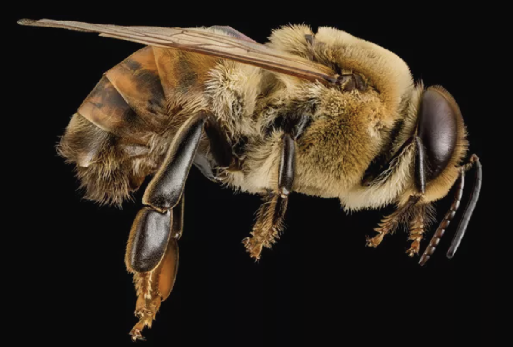

These bees, which were imported to North America to pollinate agricultural crops, are easy to distinguish from native bees by their coloring, which is golden brown with black abdominal stripes. The honeybees you'll see are female workers. Look closely at them, and if they've been visiting flowers you will notice yellow pollen on their legs. As the bees collect pollen, they move it across their bodies and to their legs where they place it in little baskets.